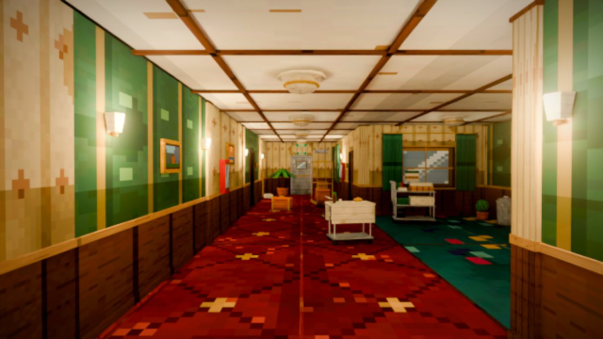
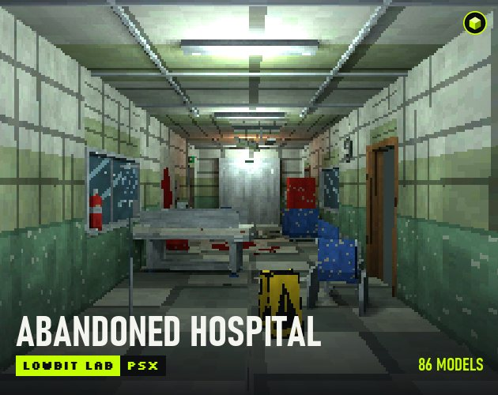
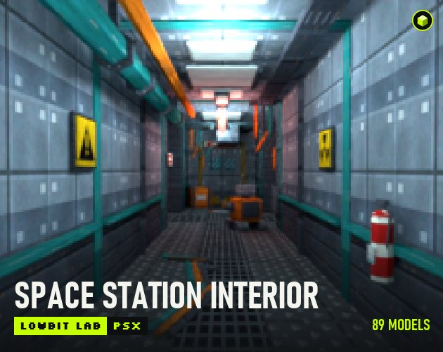
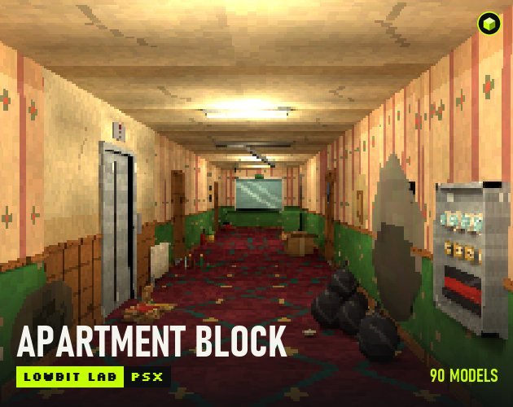
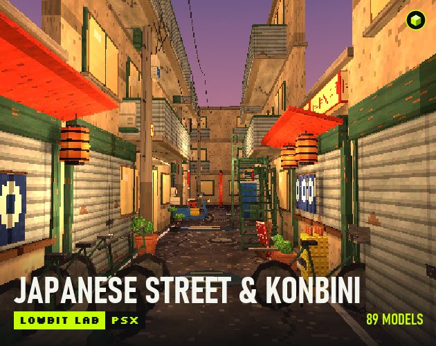
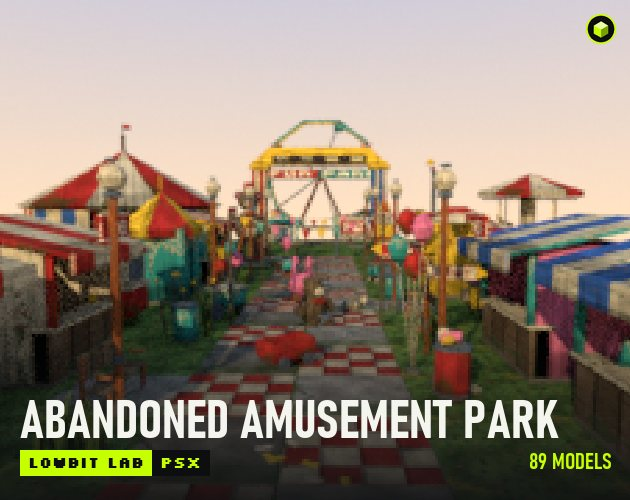
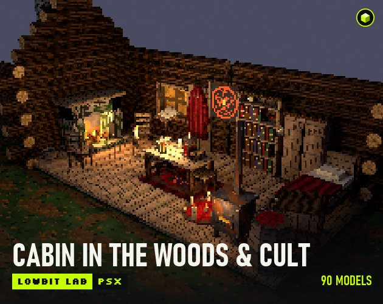
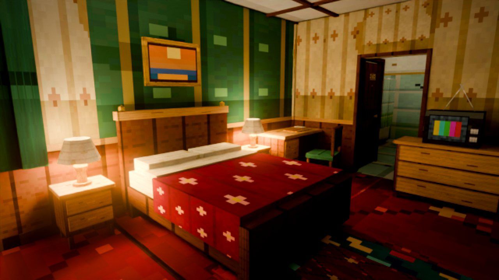

We are a small studio building environment packs with the look of late-90s console games: one small texture atlas per pack and low polygon counts, ready for Unity, Godot and Unreal.

What we make

Abandoned HospitalCorridors, wards, operating rooms and a morgue

Space Station InteriorModular corridors, airlocks, cryo bays and cargo holds

Apartment BlockCorridors, stairwells, laundry room, kitchens and living rooms

Japanese StreetStreet modules and a convenience store, inside and out

Abandoned Amusement ParkRides, coaster modules, booths and tents

Cabin in the WoodsA log cabin, outbuildings and a ritual clearing
How our packs are built
One model per file in FBX, GLB and OBJ, plus a Blender scene
One small texture atlas per pack, point filtering for the PS1 look
Modular pieces on a 4 m grid, so rooms and corridors snap together
Low triangle counts

Where to find them
Our Unity-ready packs are distributed through the Unity Asset Store. Some packs are also shown on our Sketchfab profile.